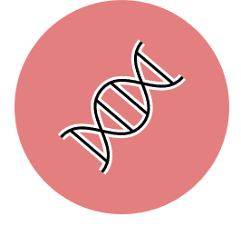
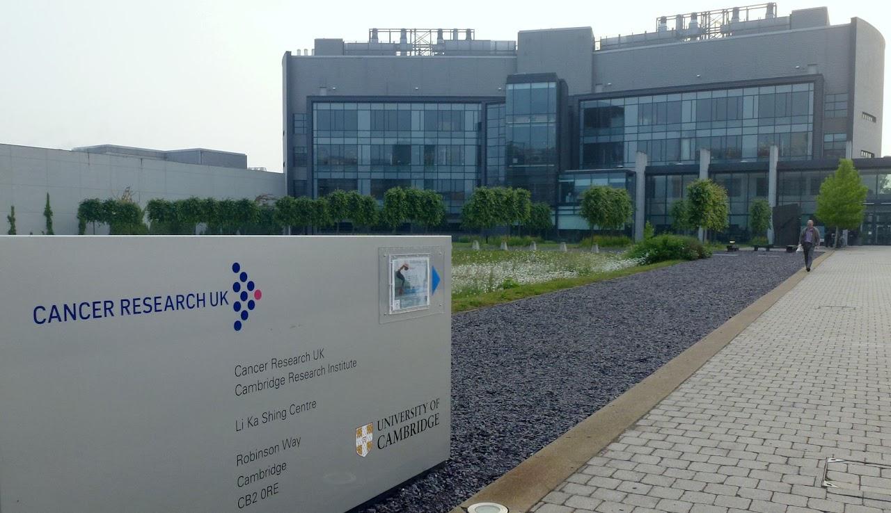

Cancer
GM4 - Molecular pathology of cancer and application in cancer diagnosis, screening, and treatment

This module aims to equip the student with detailed knowledge and understanding of the molecular mechanisms involved in cancer development. This will include the ways in which interrogation of a person’s own genome and the genome of tumour cells can facilitate the diagnosis and treatment of cancer. This module covers the molecular mechanisms that underlie cancer development, growth and metastasis, and the differences between different cancers. It will explore the different molecular and cellular actions of anti-cancer treatments, the genomic factors affecting response and resistance to treatment, and the research approaches to anti-cancer drug design and development. Broad situations which confer a high cancer risk to a person and/or to other members of the same family will be discussed in the context of how genomic information may be integrated into cancer screening programmes.
What will I study in this module?
In GM4 you will learn about:
Tumour classification systems
Cellular properties of tumours: growth, division, invasion, aberrant hormone or toxin production, immunogenicity
Molecular and functional classification of somatic DNA mutations
Clonal evolution and subclonal architecture of cancer
Factors in tumour formation: molecular mechanisms and role of microenvironment, mutagens, mutational processes, molecular signatures & changing classification
Diagnosis, molecular sub-classification, aggressiveness (prognosis) characterisation of metastases
Monitoring disease following treatment (medical, surgical or bone marrow transplant)
Genomic testing of cell free tumour DNA in blood, for diagnosis and monitoring of solid cancers
Importance of sample quality for tumour genomic analysis
Understanding the molecular effects of single and the synergy between multiple oncogenic mutations
Computational/internet resources on Cancer Genomics (COSMIC, mutational calling algorithms, genome browsers, medical/scientific literature)
The basis of heritable predisposition to cancer
The role of environmental factors, microorganisms and lifestyle choices on cancer predisposition and protection
Genomic and cellular markers and choice of treatment regimes in haematological cancer and in solid tumours
Companion diagnostics in cancer
Breakthrough tumour, relapse, metastasis and molecular mechanisms
What will I be able to achieve at the end?
By the end of this module students will be able to:
Understand the mutational processes driving cancer and how these manifest themselves as mutational signatures in cancer genomes
Appreciate the concepts driving the clonal evolution of different cancers and its parallels to Darwinian natural selection
Understand the concepts of driver and passenger mutations, as well as the basis of acquired resistance to cancer therapies
Apply the principles of cancer development and emerging changes in classification
Compare and contrast the genomic basis of cancer predisposition, and how this is used to identify people and families at higher risk of cancer
Critically evaluate the impact of genomic advances for the diagnosis, classification, treatment selection and monitoring of cancer (e.g. leukaemia, breast, melanoma, lung cancers)
Analyse how information from exome and whole genome analysis of tumour tissue can be used to investigate the molecular and cellular processes leading to cancer and inform strategies for drug development.

Preserved from https://www.genomics.cam/modules/molecular-pathology-of-cancer on 10 September 2026. Linked external services may require internet access. The original source snapshot is included with the migration files.